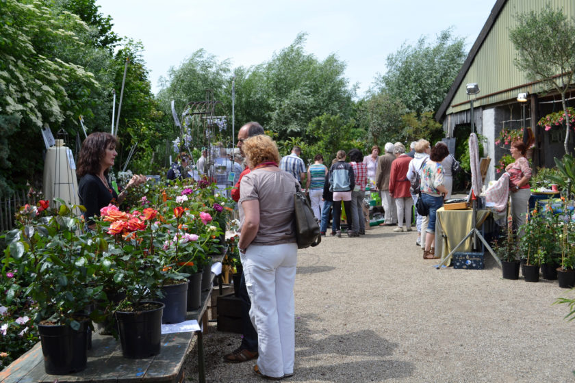
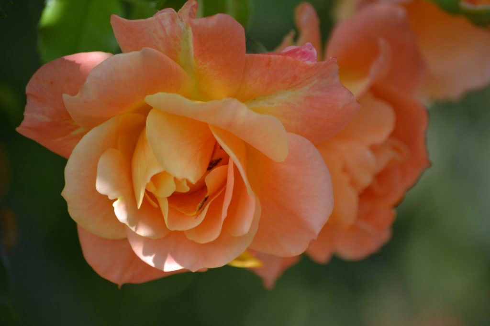
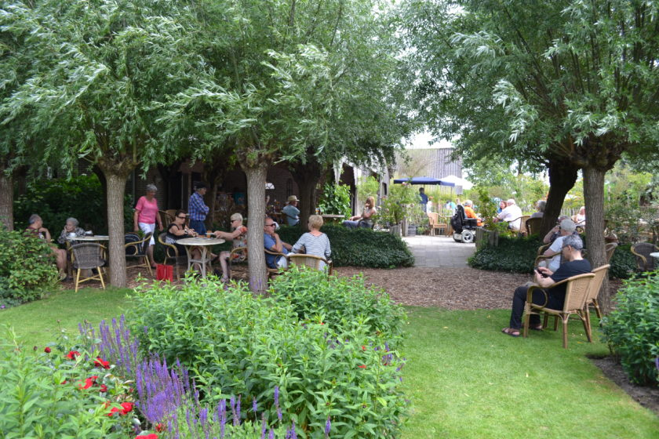
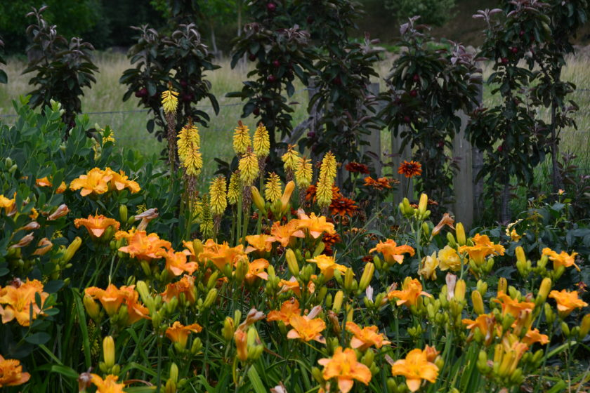
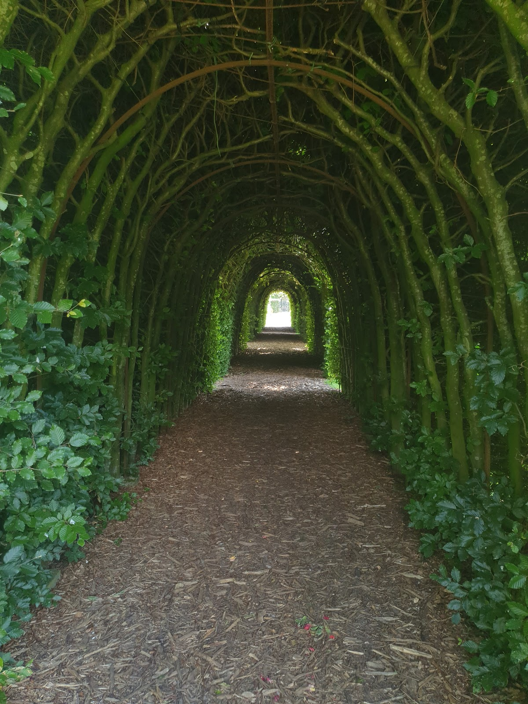
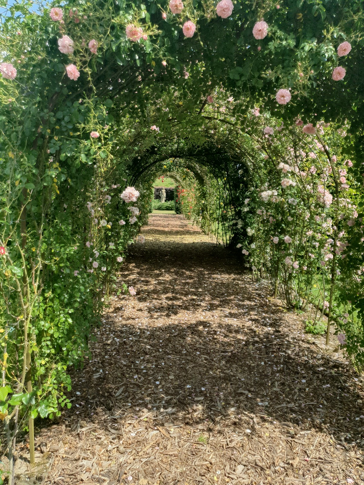
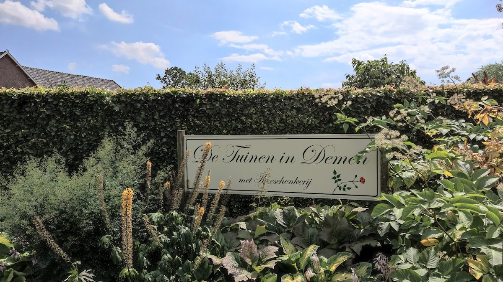
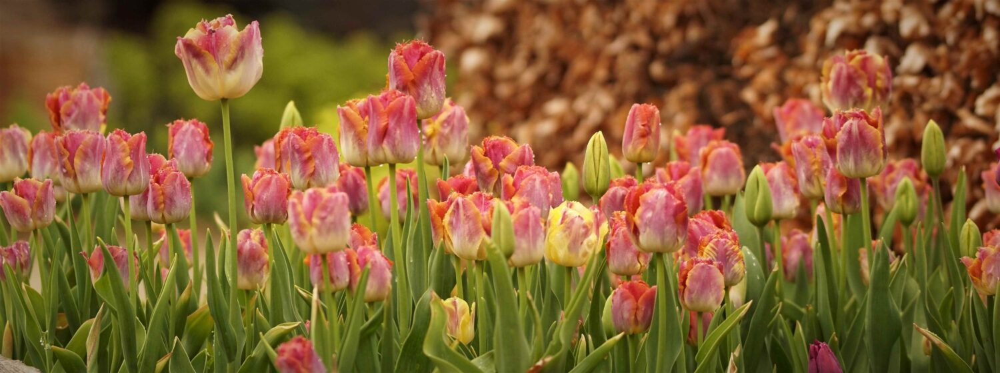
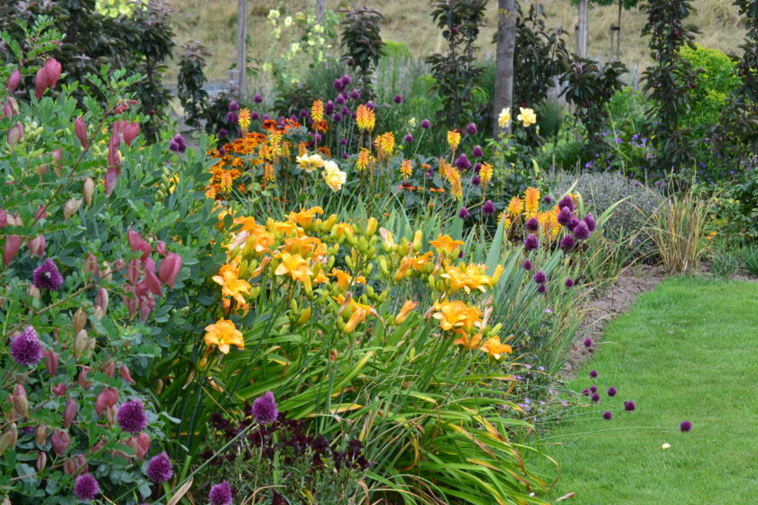
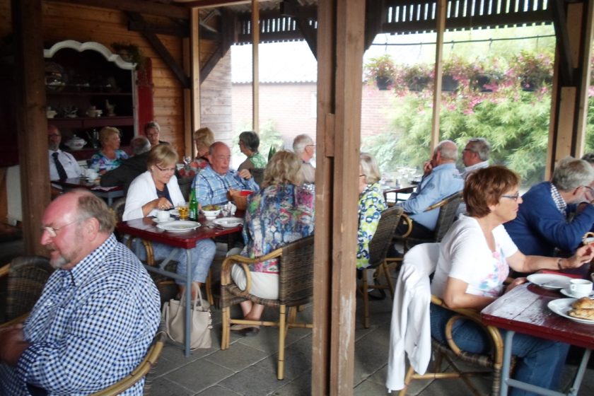

Een kijkje in de tuinen
Ontdek de prachtige kleurencombinaties en sfeervolle hoekjes









Een unieke beleving voor de ware tuinliefhebber, tussen Nijmegen en Den Bosch
1,5
Hectare tuinen
20+
Verschillende siertuinen
1000+
Rozen
4.7
⭐ Google rating
De Tuinen in Demen zijn anderhalve hectare groot en bestaan uit verschillende delen die elk hun eigen kleur en sfeer hebben. De combinaties van kleuren zijn soms subtiel, soms uitbundig maar steeds uitgekiend en niet alledaags.
Het schouwspel van lijnen en doorkijkjes is verrassend en indrukwekkend. Kennis van planten en gevoel voor kleur zijn hier verenigd met sterk ruimtelijk inzicht en technische ervaring.
Meer over de tuinen
Van duizenden tulpen in het voorjaar tot siergrassen in de nazomer — er is altijd iets bijzonders te zien.
Duizenden laatbloeiende tulpen op kleur gecombineerd met voorjaarsbloeiende planten. 20.000 bollen zorgen voor een waar kleurenspektakel.
Meer dan honderd soorten Iris germanica, weelderige pioenrozen en meer dan duizend rozen. Prachtig om te zien en heerlijk om te ruiken.
Asters in alle kleuren, siergrassen met prachtige bladverkleuring en éénjarige planten die tot diep in het najaar bloeien.

Geniet van het frisse appelsap van eigen appels, een lekker kopje cappuccino of biologische thee van Numi. Er is een ruime keuze aan heerlijk gebak en goed belegde broodjes van de warme bakker.
De verrukkelijke aardbeientaart is beroemd! Op het terras zit je omringd door bijzondere kuipplanten.
Meer over de theeschenkerijOntdek de prachtige kleurencombinaties en sfeervolle hoekjes







Een sfeerimpressie van De Tuinen in Demen — Alles Wat Bloeit
⭐ 4.7 uit 5 — 160 Google reviews
"Wat een geweldige tuin is dit! Overal is goed over nagedacht. Prachtig geschoren heggen en mooie kleurencombinaties."
René Gerritzen
"Stuk kleurrijker dan de tuinen van Appeltern rond aanloop zomer. Lekker om een potje koffie te drinken op het terras."
Marijn Grevers
"Schitterende tuin, je ziet de liefde voor de tuin. Mooi theehuis, lekkere broodjes en de gebakjes zijn top!"
Jan Dijk
De Tuinen in Demen zijn vanaf 12 april 2026 elke donderdag en zondag open van 11:00 tot 17:00 uur. Groepen kunnen ook op andere dagen terecht.